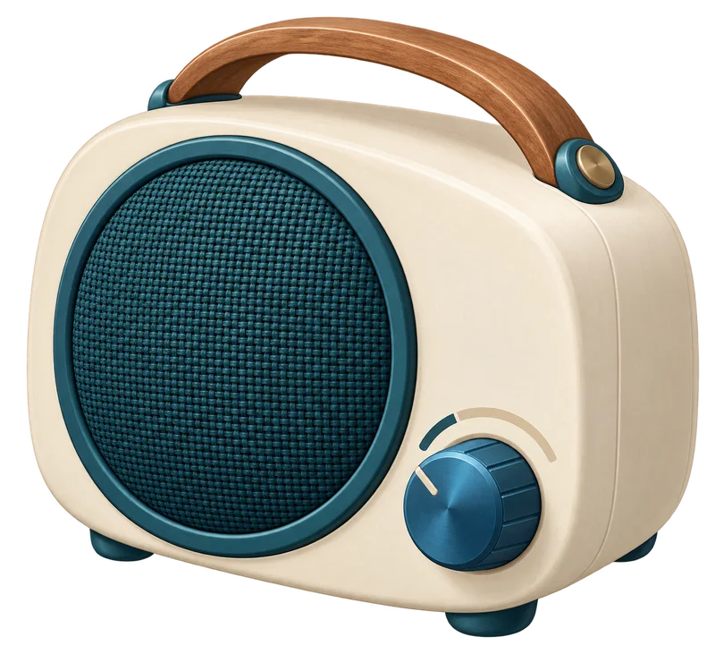
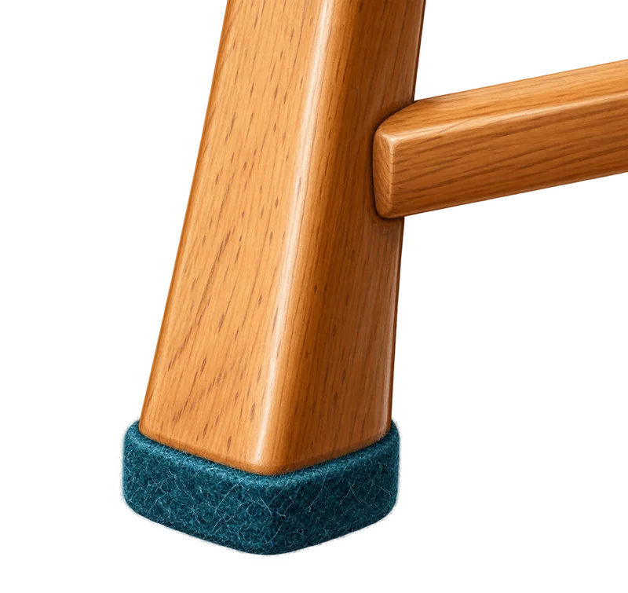
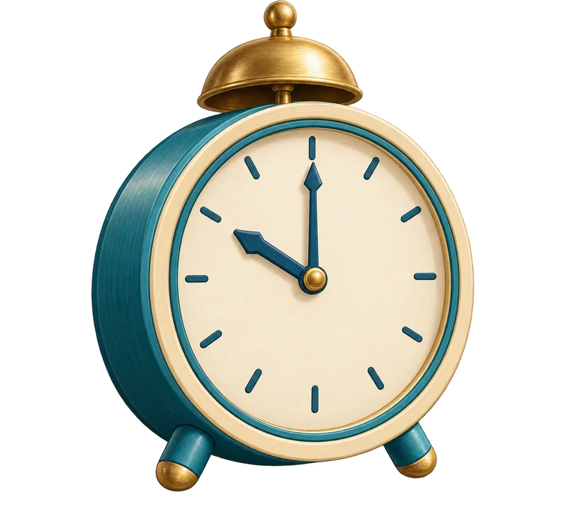
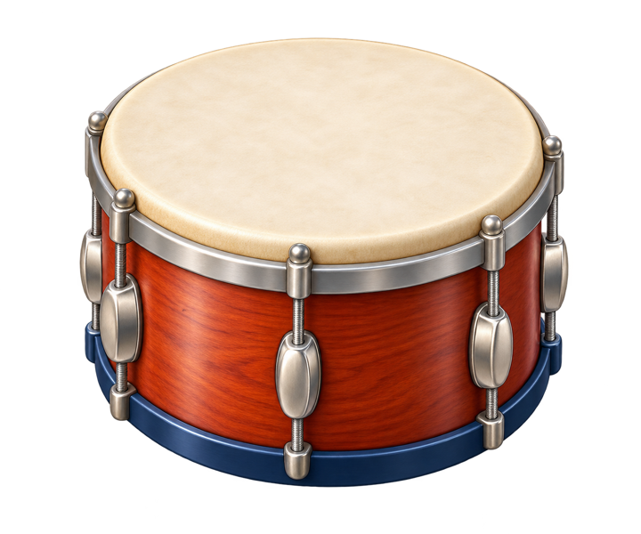

삐오의 소리 노트
필요한 소리는 살리고
누가, 언제, 어디에서 불편할까?
음량을 줄이고 의자에 패드를 붙여.
연습 시간과 장소도 바꿀 수 있어.
필요한 안내는 들리게, 서로 배려해.
복도 북 연습
책 읽는 친구

음량 줄이기

의자 다리에 패드

쉬는 시간에
넓은 운동장에서

필요한 안내 → 들리게
연습 소리 → 줄이기

모두 편안해!
누가, 언제, 어디에서 불편할까?
음량을 줄이고 의자에 패드를 붙여.
연습 시간과 장소도 바꿀 수 있어.
필요한 안내는 들리게, 서로 배려해.



